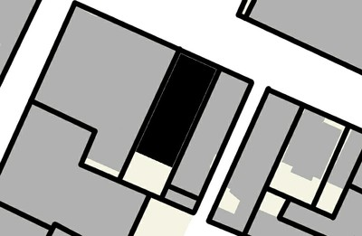
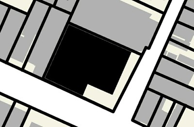
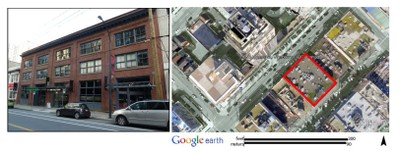
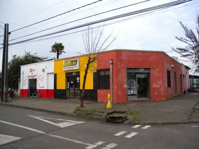
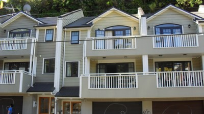
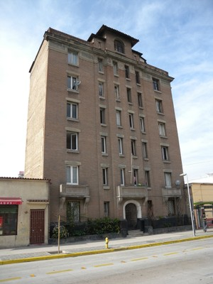

Adificios adyacentes en dos lados [BP2]
Un edificio, usualmente ubicado en una esquina, con edificios adjuntos o unidos en dos lados. Esto incluye edificios edificios que hacen parte de la fila de al menos tres edificios, o edificios de esquina con edificios contiguos en dos lados perpendiculares.

Ejemplo 1 : el edificio que se muestra en negro en este plano se encuentra dentro de un bloque y tiene edificios colindantes en dos lados.

Ejemplo 2 : el edificio que se muestra en negro en esta vista en planta se encuentra en una esquina y tiene edificios en dos lados perpendiculares.

Un ejemplo de un edificio dentro de un bloque con edificios colindantes en dos lados, Vancouver , Canadá (foto izquierda: S. Brzev , derecha: Los datos del mapa © 2013 Google , DigitalGlobe )

Un edificio de esquina con edificios colindantes en dos lados perpendiculares, Nueva Zelanda ( L. Allen).

Un edificio de esquina con edificios adjuntos en dos lados perpendiculares, Talca, Chile (S. Brzev).

Vivienda de terraza con casas contiguas en dos lados , Nueva Zelanda ( L. Allen)

Un edificio de mediana altura en Santiago de Chile con edificios colindantes de baja altura en los dos lados ( S. Brzev )